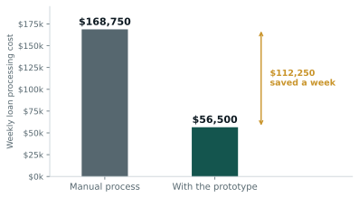

01 / 05
The question
The brief was a fictional bank, Interstellar, that had just acquired a smaller lender and inherited a mess. Loan processing was manual, slow and error-prone, systems crashed under volume, and approvals were inconsistent because nothing was risk-graded.
Most teams answer a brief like this with a strategy deck. We built the thing instead, so the recommendation came with a working demonstration of what it would actually look like.
02 / 05
Data and method
The constraint that shaped everything: no real customer data. Under privacy limits we generated a synthetic dataset modelled on first-home-buyer profiles, the bank's largest segment, carrying age, income, employment status, credit score, deposit, property value, loan amount and loan-to-value ratio.
That constraint is worth being clear about. Synthetic data proves a pipeline runs end to end. It does not validate the model, because the only pattern available to learn is the one the generator put there. The prototype is a demonstration of architecture, not evidence of predictive accuracy.
I built four pieces:
The customer portal. An application form with document upload and an assistant panel, built mobile-first. This is the entry point, and building it made the data requirements concrete rather than hypothetical.
Document parsing. An OCR step that pulls income, credit score, deposit and loan details out of uploaded documents and passes them straight into the model, so no one re-keys anything.
The credit risk model. A generalised linear model with a logit link, fit in statsmodels, estimating probability of default from the structured inputs. The threshold was selected by tuning F1 across the range rather than defaulting to 0.5, since the approve and reject errors are not symmetric in cost.
IFRS 9 outputs. PD feeds Exposure at Default and Loss Given Default to give Expected Credit Loss, ECL = PD x EAD x LGD. LGD is rule-based and scales with loan-to-value. This is the part that makes the output usable by a bank rather than just a classifier score, because ECL is what provisioning and audit actually run on.
03 / 05
Results

| Before | After | |
|---|---|---|
| Cost per staff per day | $675 | $225 |
| Weekly processing cost | $168,750 | $56,500 |
The saving is $112,250 a week, on the assumption that automation handles roughly 70% of applications and the remaining 30% still go to a person. The model is a straightforward staff-hours calculation, and the assumption is the load-bearing part of it, not the arithmetic.
I also built a transition matrix over five PD bands to simulate how borrowers migrate between risk grades over time. A point-in-time PD tells you who might default now. The migration pattern tells you where the book is heading, which is what IFRS 9 staging needs and what gives the bank an early warning rather than a lagging one.
04 / 05
What I concluded
The recommendation was not “automate the loan process”. It was that the bank should treat credit decisions as a graded, explainable pipeline rather than a manual approval queue, and the prototype existed to show what that means concretely.
Building the front end alongside the model changed the analysis. Sitting with the application form forces you to decide exactly which fields the model needs, and that fed back into what the GLM could reasonably use. The two halves are usually built by different people, and doing both meant the data requirements and the model specification agreed with each other.
05 / 05
What I would do differently
The obvious limitation is the synthetic data. Everything downstream inherits it, so the first real step would be refitting on actual lending records and checking whether the coefficients survive.
I would also treat the cost model more carefully. It rests on a single assumption about the automation rate, and a range with the saving recalculated at each point would be more honest than one number.